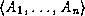
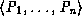
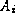
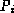
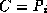

Common Lisp the Language, 2nd Edition

A
method object contains a method function, a sequence of parameter specializers that specify when the given method is
applicable, a lambda-list, and a sequence of qualifiers that
are used by the method combination facility to distinguish among
methods.
A method object is not a function and cannot be invoked as a function. Various mechanisms in the Object System take a method object and invoke its method function, as is the case when a generic function is invoked. When this occurs it is said that the method is invoked or called.
A method-defining form contains the code that is to be run when the arguments to the generic function cause the method that it defines to be invoked. When a method-defining form is evaluated, a method object is created and one of four actions is taken:
If the lambda-list of a new method is not congruent with the lambda-list of the generic function, an error is signaled. If a method-defining form that cannot specify generic function options creates a new generic function, a lambda-list for that generic function is derived from the lambda-lists of the methods in the method-defining form in such a way as to be congruent with them. For a discussion of congruence, see section 28.1.6.4.
Each method has a specialized lambda-list, which determines when that method can be applied. A specialized lambda-list is like an ordinary lambda-list except that a specialized parameter may occur instead of the name of a required parameter. A specialized parameter is a list (variable-name parameter-specializer-name), where parameter-specializer-name is either a name that names a class or a list (eql form). A parameter specializer name denotes a parameter specializer as follows:
Parameter specializer names are used in macros intended as the user-level interface (defmethod), while parameter specializers are used in the functional interface.
[It is very important to understand clearly the distinction made in the preceding paragraph. A parameter specializer name has the form of a type specifier but is semantically quite different from a type specifier: a parameter specializer name of the form (eql form) is not a type specifier, for it contains a form to be evaluated. Type specifiers never contain forms to be evaluated. All parameter specializers (as opposed to parameter specializer names) are valid type specifiers, but not all type specifiers are valid parameter specializers. Macros such as defmethod take parameter specializer names and treat them as specifications for constructing certain type specifiers (parameter specializers) that may then be used with such functions as find-method.-GLS]
Only required parameters may be specialized, and there must be a parameter specializer for each required parameter. For notational simplicity, if some required parameter in a specialized lambda-list in a method-defining form is simply a variable name, its parameter specializer defaults to the class named t.
Given a generic function and a set of arguments, an applicable method is a method for that generic function whose parameter specializers are satisfied by their corresponding arguments. The following definition specifies what it means for a method to be applicable and for an argument to satisfy a parameter specializer.
Let  be the required arguments to a generic function in order. Let  be the parameter specializers corresponding to the required parameters of the method M in order. The method M is applicable when each  satisfies . If is a class, and if is an instance of a class C, then it is said that satisfies when  or when C is a subclass of . If is of the form (eql object), then it is said that satisfies when the function eql applied to and object is true.
Because a parameter specializer is a type specifier, the function typep can be used during method selection to determine whether an argument satisfies a parameter specializer. In general a parameter specializer cannot be a type specifier list, such as (vector single-float). The only parameter specializer that can be a list is (eql object). This requires that Common Lisp define the type specifier eql as if the following were evaluated:
(deftype eql (object) `(member ,object))
[See section 4.3.-GLS]
A method all of whose parameter specializers are the class named t is called a default method; it is always applicable but may be shadowed by a more specific method.
Methods can have qualifiers, which give the method combination procedure a way to distinguish among methods. A method that has one or more qualifiers is called a qualified method. A method with no qualifiers is called an unqualified method. A qualifier is any object other than a list, that is, any non-nil atom. The qualifiers defined by standard method combination and by the built-in method combination types are symbols.
In this specification, the terms primary method and auxiliary method are used to partition methods within a method
combination type according to their intended use. In standard method
combination, primary methods are unqualified methods, and auxiliary
methods are methods with a single qualifier that is one of
:around, :before, or :after. When a method combination
type is defined using the short form of
define-method-combination, primary methods are methods qualified with
the name of the type of method combination, and auxiliary methods have
the qualifier :around. Thus the terms primary method
and auxiliary method have only a relative definition within a
given method combination type.